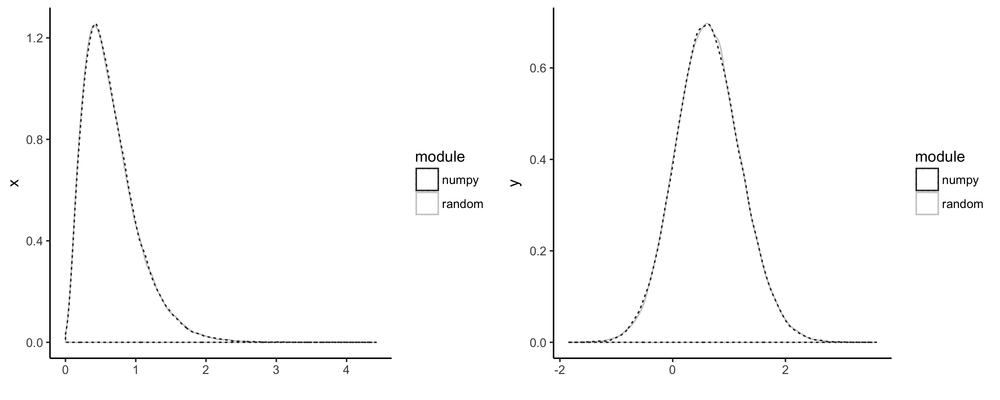

A simple Python benchmark exercise
Recently when discussing the Crystal language and specifically the Gibbs sample blog post with a colleague, he mentioned that the Python benchmark numbers looked a bit off and not consistent with his experience of numerical programming in Python.
To recall, the numbers were:
| Language | Time(s) |
|---|---|
| R | 364.8 |
| Python | 144.0 |
| Scala | 9.896 |
| Crystal | 5.171 |
| C | 5.038 |
To have a better understanding of what is happening, I've decided to profile and benchmark that code (running on Python 3.6).
The code is the following:
import random, math def gibbs(N=50000, thin=1000): x = 0 y = 0 print("Iter x y") for i in range(N): for j in range(thin): x = random.gammavariate(3, 1.0 / (y y + 4)) y = random.gauss(1.0 / (x + 1), 1.0 / math.sqrt(2 x + 2)) print(i,x,y) if __name__ == "main": gibbs()
Profiling this code with cProfile gives the following results:
| Name | Call count | Time (ms) | Percentage |
|---|---|---|---|
| gammavariate | 50000000 | 141267 | 52.1% |
| gauss | 50000000 | 65689 | 24.2% |
| <built-in method math.log> | 116628436 | 18825 | 6.9% |
| <method 'random' of '_random.Random' objects> | 170239973 | 17155 | 6.3% |
| <built-in method math.sqrt> | 125000000 | 12352 | 4.6% |
| <built-in method math.exp> | 60119980 | 7276 | 2.7% |
| <built-in method math.cos> | 25000000 | 3338 | 1.2% |
| <built-in method math.sin> | 25000000 | 3336 | 1.2% |
| <built-in method builtins.print> | 50001 | 1030 | 0.4% |
| gibbs.py | 1 | 271396 | 100.0% |
The results look different than the original ones on account of being performed on a different machine. However, we will just look into the relative code performance between different implementations and whether the code itself has room for optimisation.
Surprisingly, the console I/O took a much smaller proportion of the execution time than I expected (0.4%).
On the other hand, as expected, the bulk of the execution time is spent on the gammavariate and gauss methods.
These methods, however, are provided by the Python's standard library random, which underneath makes heavy usage of C code (mainly by usage of the random() function).
For the second run of the code, I've decided to use numpy to sample from the Gamma and Normal distributions. The new code, gibbs_np.py, is provided below.
import numpy as np import math def gibbs(N=50000, thin=1000): x = 0 y = 0 print("Iter x y") for i in range(N): for j in range(thin): x = np.random.gamma(3, 1.0 / (y y + 4)) y = np.random.normal(1.0 / (x + 1), 1.0 / math.sqrt(2 x + 2)) print(i,x,y) if __name__ == "main": gibbs()
We can see from the plots below that the results from both modules are identical.

The profiling results for the numpy version were:
| Name | Call count | Time (ms) | Percentage |
|---|---|---|---|
| <method 'gamma' of 'mtrand.RandomState' objects> | 50000000 | 121211 | 45.8% |
| <method 'normal' of 'mtrand.RandomState' objects> | 50000000 | 83092 | 31.4% |
| <built-in method math.sqrt> | 50000000 | 6127 | 2.3% |
| <built-in method builtins.print> | 50001 | 920 | 0.3% |
| gibbs_np.py | 1 | 264420 | 100.0% |
A few interesting results from this benchmark were the fact that using numpy or random didn't make much difference overall (264.4 and 271.3 seconds, respectively).
This is despite the fact that, apparently, the Gamma sampling seems to perform better in numpy but the Normal sampling seems to be faster in the random library.
You will notice that we've still used Python's built-in math.sqrt since it is known that for scalar usage it out-performs numpy's equivalent.
Unfortunately, in my view, we are just witnessing a fact of life: *Python is not the best language for number crunching*.
Since the bulk of the computational time, as we've seen, is due to the sampling of the Normal and Gamma distributions, it is clear that in our code there is little room for optimisation except the sampling methods themselves.
A few possible solutions would be to:
- Convert the code to
Cython - Use FFI to call a highly optimised native library which provides Gamma and Normal distributions (such as GSL)
Nevertheless, personally I still find Python a great language for quick prototyping of algorithms and with an excellent scientific computing libraries ecosystem. Keep on Pythoning.